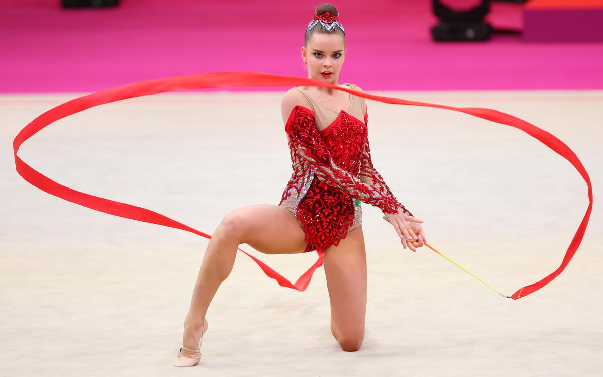
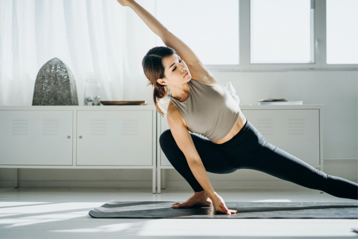

Информация о Гимнастике

Гимнастика — это вид спорта и физической активности, который включает в себя разнообразные упражнения, движения и элементы, направленные на развитие гибкости, силы, координации, равновесия и эстетики движений. Гимнастика сочетает в себе физические нагрузки, художественное выражение и спортивные элементы, делая ее одним из наиболее увлекательных и изящных видов спорта.
Существует несколько разновидностей гимнастики:
Артистическая гимнастика:
Этот вид гимнастики фокусируется на выступлениях с использованием разнообразных акробатических элементов, гимнастических упражнений, танцев и хореографии. Она характеризуется элегантностью, грацией и пластичностью движений.
Спортивная гимнастика:
Включает в себя разные подвиды, такие как гимнастика на брусьях, гимнастика на кольцах, гимнастика на коне, гимнастика на балансине и гимнастика на брусьях. Она требует высокой силы, гибкости и техничности для выполнения сложных элементов на различных оборудованиях.
Ритмическая гимнастика:
Этот вид гимнастики сочетает в себе акробатические движения с работой с гимнастической палкой, обручем, лентой, мячом и веревкой. Главной особенностью является плавность и синхронность движений под музыку.
Тренировки вольных упражнений:
Этот вид гимнастики включает в себя гимнастические элементы и акробатику, выполняемые на мате. Он подразумевает комбинацию разнообразных движений, таких как сальто, сомерсолты, рулька и другие.
Гимнастика является как индивидуальным, так и командным видом спорта. Все гимнасты занимаются разнообразными упражнениями для развития своей физической формы, гибкости и навыков. Тренировки в гимнастике также способствуют развитию координации, концентрации, выносливости и пластичности.
Гимнастика является одним из видов спорта, представленных на Олимпийских играх, и она продолжает привлекать внимание как участников, так и зрителей своей элегантностью и техничностью движений.
советы

Стать гимнастом требует усилий, преданности и постоянных тренировок. Вот шаги, которые помогут вам начать свой путь к становлению гимнастом:
Оцените свой интерес и способности:
Первый шаг - определить, действительно ли вы интересуетесь гимнастикой. Убедитесь, что этот вид спорта соответствует вашим интересам и физическим способностям.
Выберите тип гимнастики:
Решите, какой вид гимнастики вас больше всего привлекает: артистическая, спортивная, ритмическая или тренировки вольных упражнений. Каждый вид имеет свои особенности и требования.
Найдите тренировочный центр или клуб:
Поищите ближайший тренировочный центр, где проводят занятия по выбранной вами дисциплине гимнастики. Подходящий тренер и хорошие условия для тренировок очень важны.
Консультация с тренером:
Обсудите свои намерения с тренером. Он оценит вашу физическую подготовку, гибкость и способности, а также поможет определить наиболее подходящий для вас план тренировок.
Регулярные тренировки:
Гимнастика требует постоянных и регулярных тренировок. Тренировки будут включать в себя работу над гибкостью, силой, равновесием, техникой движений и элементами конкретной дисциплины.
Развитие техники и навыков:
Освойте базовые техники и элементы, характерные для выбранной дисциплины. Постепенно прокачивайте свои навыки и учите более сложным движениям.
Работа над гибкостью:
Гибкость играет важную роль в гимнастике. Включите в свою программу тренировок упражнения на растяжку и улучшение гибкости.
Упражнения на силу:
Гимнастика требует хорошей силы тела. Работайте над упражнениями для укрепления мышц, особенно в тех областях, которые используются в вашей дисциплине.
Работа над равновесием и координацией:
Гимнастика также требует хорошего равновесия и координации. Практикуйте упражнения, которые помогут улучшить эти навыки.
Забота о здоровье:
Особое внимание уделяйте своему здоровью. Обеспечьте правильное питание, регулярный сон и организуйте периоды отдыха для восстановления.
Постоянство и терпение:
Процесс становления гимнастом может быть сложным. Будьте терпеливы и настойчивы, постепенно развивая свои навыки.
Участие в соревнованиях:
Как только вы наберете определенный уровень мастерства, начните участвовать в местных соревнованиях, чтобы измерить свой прогресс и получить опыт соревнований.
Старайтесь постепенно повышать свой уровень и достигать новых целей. Гимнастика — это интенсивный вид спорта, который требует преданности и усилий, но он также может принести множество радостных моментов и достижений.